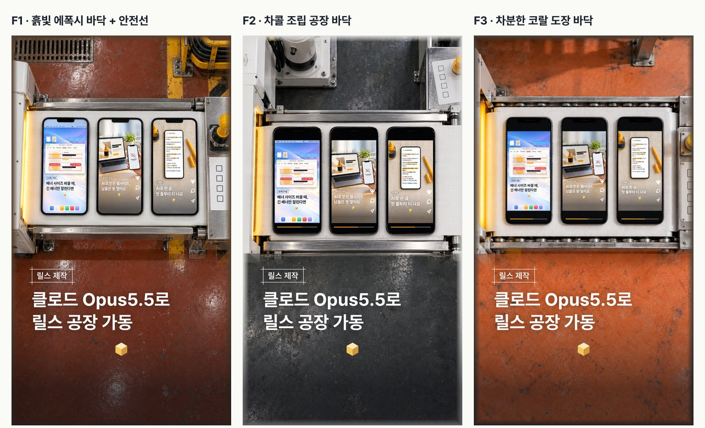

클로드 Opus5.5로
릴스 공장 가동
이 채널 릴스는 편집 툴을 열지 않고 만들어요. 대본 · 목소리 · 썸네일 그림 · 영상 편집은 AI가 하고, 사람은 주제 · 대본 · 썸네일 · 올릴지 네 번 골라요. 대신 한 번에 끝나진 않아요. 조회 3,213회가 나온 EP.14도 대본만 15번 다시 썼어요. 고쳐 쓴 건 AI였고, 사람은 어디가 어색한지만 짚었어요.
01공정표
이 편(EP.22)을 만든 순서 그대로예요. 순서는 꼭 대본 → 썸네일 → 목소리 → 영상으로 가요. 대본이 바뀌면 뒤가 전부 다시 만들어지니까, 앞 단계를 확정하기 전엔 영상을 뽑지 않아요.
| 단계 | AI가 하는 일 | 쓰는 도구 | 사람이 하는 일 |
|---|---|---|---|
| 주제 | 후보 몇 개를 '막힘 한 문장' · 훅 · 썸네일 아이디어까지 붙여서 정리 | Claude | ① 하나 고르기 |
| 대본 | 문장마다 번호 붙인 대본, 첫 문장(훅)은 2안 | Claude | ② 훅 고르고 OK |
| 썸네일 | 그림은 이미지 AI, 제목 · 태그 · 로고는 매번 같은 틀에 얹어 2~3안 보드로 | GPT 이미지 + 정해 둔 틀 | ③ 하나 고르기 |
| 목소리 | 같은 목소리 · 같은 설정으로 생성 → 받아쓰기로 잘못 읽은 곳 확인 → 쉼 줄이고 1.1배 | ElevenLabs | — (설정은 처음 한 번만 골라 고정) |
| 영상 | 말하는 시간에 맞춰 자막 · 장면 배치 → 글자 간격 검사 통과하면 렌더 | Claude(코드로 렌더) | — (완성본 보고 고칠 곳 짚기) |
| 올리기 | 캡션 · 상세 노트 페이지 정리 | Claude | ④ 올릴지 정하고 직접 게시 |

③ 썸네일을 고를 때 실제로 본 보드(6차). 폰 화면 속은 실제로 올린 EP.14 · 15 · 21이에요.
02처음엔 어디까지 맡길까 — 4단계
바이브 코딩을 안 해 봤다면 1단계부터 하나씩 늘려요. 각 단계만 해도 손이 가는 시간이 줄어요.
주제와 대상만 주고, 문장 번호 붙인 대본 + 훅 2안을 받아요. 사람은 훅을 고르고 어색한 문장만 짚어요.
(대상)이 실무에서 막히는 (막힘 한 문장)을 푸는 인스타 릴스 대본을 써 줘. - 25~30초, 문장 6~8개, 문장마다 번호. - 1번 문장(훅)은 2안: 보는 사람의 손해를 먼저 말하는 안 / 결과물을 먼저 보여 주는 안. - 첫 3초에는 도구 이름을 꺼내지 마. - 숫자는 내가 준 것만 쓰고, 없으면 숫자 없이 써. - 마지막 문장은 "(이득 한 마디)하고 싶다면, 팔로우하고 프로필 상세 노트 확인하세요."
목소리 · 모델 · 안정성 · 유사성을 한 번 정해 두고 매번 같은 값으로 뽑아요. 우리는 Han - Conversational · Eleven v4 · 안정성 53% · 유사성 75% · 언어 한국어예요. 영어 · 숫자는 원고에서만 읽는 대로 적어요(AI → 에이아이, 3천 → 삼천). 자막엔 원래대로 써요.
그림만 AI에 맡기고, 제목 · 태그 · 로고 자리는 템플릿으로 고정해요. 이미지 AI는 글자를 잘 깨뜨려서 제목은 그림에 넣지 않아요. 그림 안 폰 화면처럼 꼭 정확해야 하는 부분은 실제 캡처를 참고 이미지로 같이 넣어요.
자막 시간 맞추기 · 장면 배치 · 렌더까지 코드로 돌려요. 처음 세팅은 오래 걸려요. 대신 한 번 틀을 만들면 다음 편부터는 장면만 바꿔요. 렌더 전에 "글자끼리 몇 px 이상 떨어졌나"를 검사하게 해 두면 고칠 일이 줄어요.
03고르기 4번 체크리스트
| 고를 때 | 볼 것 |
|---|---|
| ① 주제 | 이 편이 풀어 주는 막힘을 한 문장으로 적을 수 있나? 이 일을 해 본 사람이면 거의 다 겪나? 동료한테 보내 줄 만한가? |
| ② 대본 | 첫 문장이 보는 사람의 손해나 결과로 시작하나? 첫 3초에 도구 이름이 없나? 숫자는 직접 확인한 값인가? 30초 안쪽인가? |
| ③ 썸네일 | 글자를 안 읽어도 무슨 얘기인지 보이나? 프로필에서 옆 편들과 색이 겹치지 않나? |
| ④ 올릴지 | 완성본을 한 번 끝까지 봤나? "프로필 상세 노트"라고 말했다면 그 페이지가 진짜 올라가 있나? |
04실제로 고친 횟수
- EP.14는 대본 v15에서 확정했고, 올리기 전에 한 번 더 새로 만들었어요(v20). EP.15는 대본 v13에서 확정했어요.
- 이 편(EP.22) 썸네일은 6차에서 골랐어요. 책상 · 민트 컨베이어 → 로봇 공장 라인 → 위에서 본 컨베이어 → 바닥까지 공장으로 바뀌었어요.
- 고친 건 매번 AI예요. 사람이 한 말은 이 정도였어요. "너무 길게 보여주는 느낌, 빠르게 훅훅" · "너무 AI로 뽑은 느낌" · "충분히 쉽게 설명됐나?"
고칠 방법까지 정해 주지 않아도 돼요. "2번 문장이 길어서 숨이 차요", "썸네일 폰 화면이 틀어져 보여요"처럼 어디가 왜 어색한지만 말하면 AI가 고친 안을 다시 가져와요.
05써 보기 전에 알아 둘 점
- 한 번에 안 끝나요. AI가 빨리 만들어도 고르고 짚는 횟수가 많아요. 처음 몇 편은 오히려 오래 걸릴 수 있어요.
- 숫자 · 주장은 직접 확인해요. AI는 그럴듯한 숫자를 지어낼 수 있어요. 대본에 들어가는 숫자는 내가 확인한 값만 줘요.
- ElevenLabs는 글자 수만큼 크레딧을 써요(Eleven v4 · 1자 = 1크레딧, 2026-10-26 확인). 한 번 생성하면 세대 2개가 같이 나와요.
- 게시 · 결제 · 가입은 사람이 해요. 이 채널도 인스타 게시는 직접 눌러요.
06출처
- 이 채널 작업 기록(편마다 기획 문서의 대본 버전 · 피드백 기록)과 2026-10-31 EP.22 제작 과정이에요.
- EP.14 조회수 3,213은 2026-10-29 인스타 인사이트 값이에요.
- 썸네일 그림은 AI로 만들었어요. 그림 속 폰 화면은 실제로 올린 릴스예요.
대행사에서 AI 교육하는 현직 마케터가 직접 써 보고 정리해요.
인스타에서 팔로우